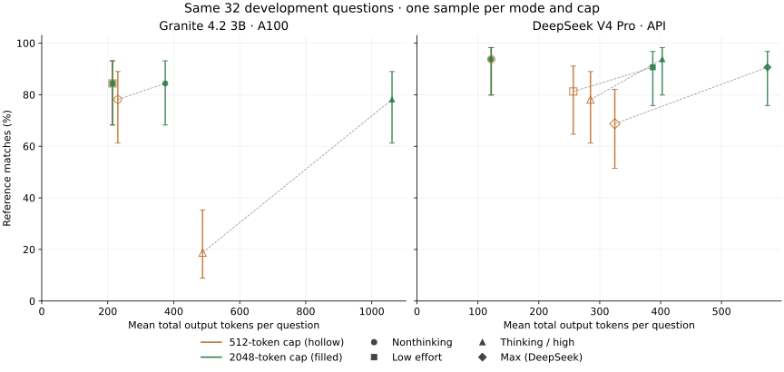
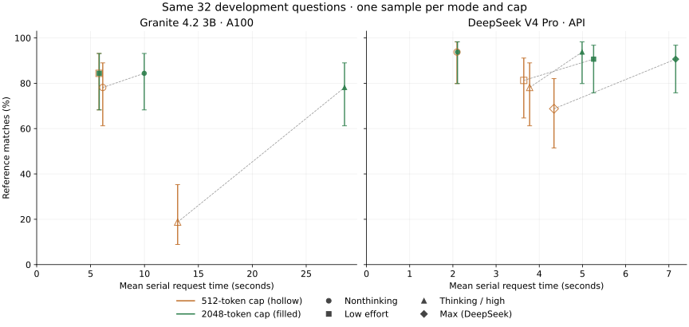

Inference-only diagnostic / Research note
Recorded 3–4 November 2026. These mode and output-budget comparisons are separate from training experiments; they do not establish a trained-model gain. Later overnight report ↗
Does more thinking buy better answers?
Granite and DeepSeek answer the same 32 math questions. Compare accuracy, every generated token, and runtime before deciding what to retrain.
Weights and research plan · Download verified results · Methods and paired comparisons
Runtime measures different systems. Granite uses warm batch-one inference on a dedicated A100. DeepSeek time includes network and API service. Use within-model mode comparisons to identify extra cost; these timings do not establish an architectural speed ranking.
A mode choice changes the resource bill
At the 2048-token cap, Granite low effort and nonthinking each matched 27/32 references. Low effort used 42.7% fewer output tokens and 41.8% less warm request time. They corrected and regressed three different answers each, so equal scores do not mean identical answers.
Granite full thinking used 4.95 times the tokens of low effort and matched 25/32. At 512 tokens, 25 of its 32 outputs were truncated. These caps measure behavior under a limited budget; they do not establish what a longer reasoning run could achieve.
DeepSeek nonthinking and high effort each matched 30/32 at the larger cap; high effort used 3.31 times the output tokens. Both models show why more generated reasoning needs a measured benefit.
Accuracy and resource use
| Model / mode | Cap | Reference matches | Match rate | Total output tokens | Tokens / correct | Truncated | Failed | Total seconds | Median seconds |
|---|
Seconds are serial request durations, summed or median as labeled. Generated tokens include reasoning, final output, wrong answers and capped outputs. A cap-truncated response is incorrect. Tokenizers differ; tokens are not equal units of compute. Unknown usage stays unknown.
Accuracy intervals and generation time
Cost versus correctness
Read each model separately. A mode with more tokens and time needs an accuracy benefit to justify the additional resources. The plots show one sampled run per cell, with Wilson intervals for question uncertainty.


What changed on the same questions?
Corrected and regressed answers reveal effects hidden by an overall score. These comparisons use all paired questions, with no answer-based exclusions.
Bootstrap intervals resample questions. They do not cover decoding variation or repeated training seeds. Multiple comparisons and the small development sample make these diagnostic observations.
Where output spending goes
| Model / mode | Cap | Tokens on nonmatching outputs | Share of output tokens | Provider reasoning tokens |
|---|
Spending on an incorrect answer is an observable cost, not proof that removing those tokens would preserve behavior. DeepSeek reasoning tokens are a subset of its completion tokens and are never added twice.
Completed errors to investigate
Compare all five low-effort misses with DeepSeek and inspect the candidate training data →
Two reference-sensitive cases
These cases were reviewed after observing mismatches. The primary reference-match scores, selected questions and denominators remain unchanged.
Protocol and limits
Granite uses temperature 1.0 and top-p 0.95, following its model card. DeepSeek non-thinking uses the same requested settings; its thinking modes use native provider sampling, where temperature is ignored. Same mode names do not imply calibrated equal effort. The common prompt requests concise necessary calculations and a numeric answer after ####.
Granite native modes · DeepSeek native controls · DeepSeek usage fields